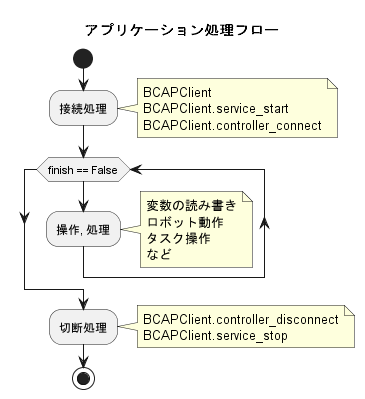

9.1. pythonライブラリで実装する.
b-cap libarry for python : https://github.com/DENSORobot/orin_bcap/tree/master/Python/bCAPClient
sample programs : https://github.com/ShoheiKobata/orin_bcap_python_samples
サンプルプログラムをローカルに準備してください.
cd workspace
git clone https://github.com/ShoheiKobata/orin_bcap_python_samples.git
cd orin_bcap_python_samples
9.2. 処理の流れ
実際にアプリケーションを作成する際の処理の流れになります.
